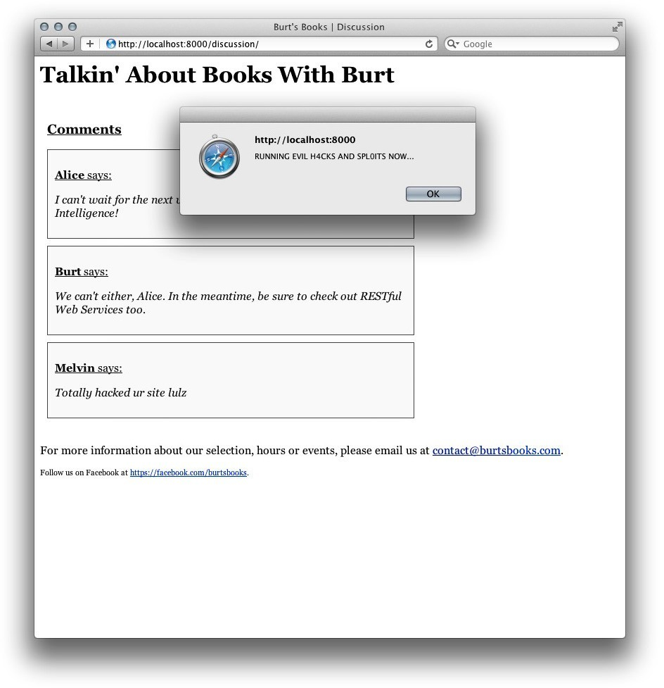
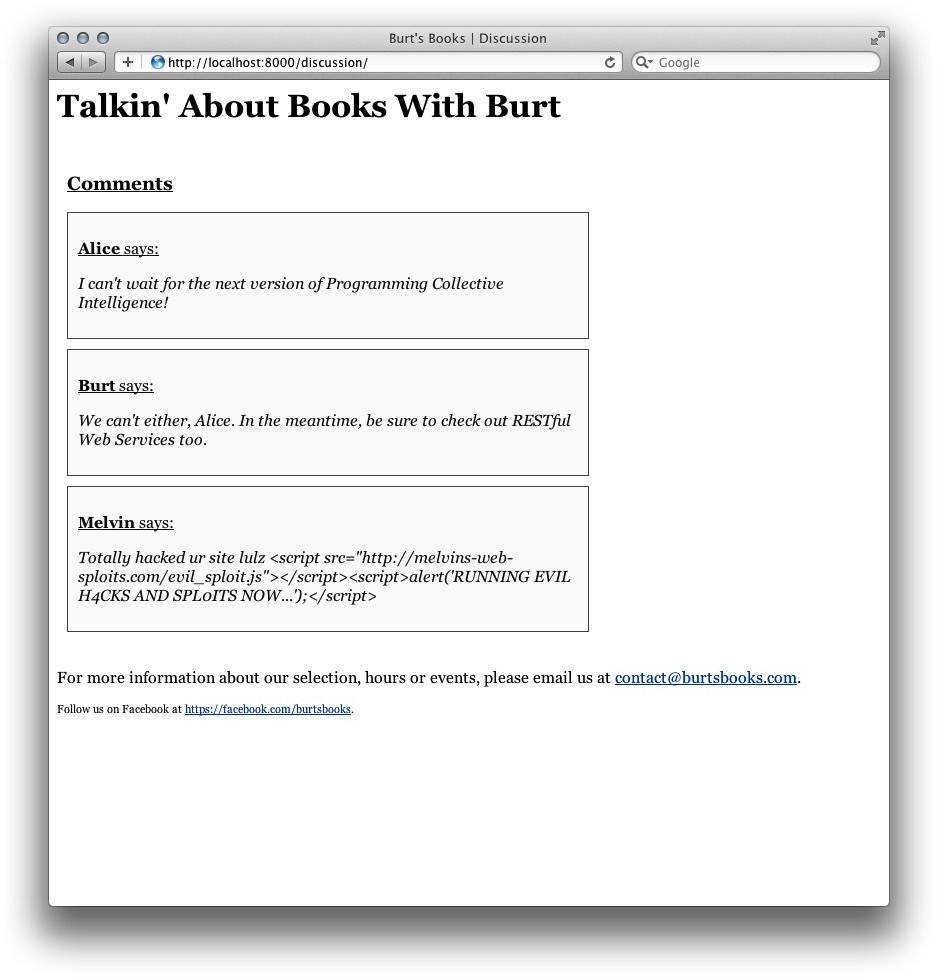

Tornado 第三章：模板扩展
在第二章中，我们看到了Tornado模板系统如何简单地传递信息给网页，使你在插入动态数据时保持网页标记的整洁。然而，大多数站点希望复用像header、footer和布局网格这样的内容。在这一章中，我们将看到如何使用扩展Tornado模板或UI模块完成这一工作。
3.1 块和替换
当你花时间为你的Web应用建立和制定模板时，希望像你的后端Python代码一样重用你的前端代码似乎只是合逻辑的，不是吗？幸运的是，Tornado可以让你做到这一点。Tornado通过extends和block语句支持模板继承，这就让你拥有了编写能够在合适的地方复用的流体模板的控制权和灵活性。
为了扩展一个已经存在的模板，你只需要在新的模板文件的顶部放上一句{% extends "filename.html" %}。比如，为了在新模板中扩展一个父模板（在这里假设为main.html），你可以这样使用：
{% extends "main.html" %}
这就使得新文件继承main.html的所有标签，并且覆写为期望的内容。
3.1.1 块基础
扩展一个模板使你复用之前写过的代码更加简单，但是这并不会为你提供所有的东西，除非你可以适应并改变那些之前的模板。所以，block语句出现了。
一个块语句压缩了一些当你扩展时可能想要改变的模板元素。比如，为了使用一个能够根据不同页覆写的动态header块，你可以在父模板main.html中添加如下代码：
<header>
{% block header %}{% end %}
</header>
然后，为了在子模板index.html中覆写{% block header %}{% end %}部分，你可以使用块的名字引用，并把任何你想要的内容放到其中。
{% block header %}{% end %}
{% block header %}
<h1>Hello world!</h1>
{% end %}
任何继承这个模板的文件都可以包含它自己的{% block header %}和{% end %}，然后把一些不同的东西加进去。
为了在Web应用中调用这个子模板，你可以在你的Python脚本中很轻松地渲染它，就像之前你渲染其他模板那样：
class MainHandler(tornado.web.RequestHandler):
def get(self):
self.render("index.html")
所以此时，main.html中的body块在加载时会被以index.html中的信息"Hello world!"填充（参见图3-1）。
我们已经可以看到这种方法在处理整体页面结构和节约多页面网站的开发时间上多么有用。更好的是，你可以为每个页面使用多个块，此时像header和footer这样的动态元素将会被包含在同一个流程中。
下面是一个在父模板ch3-main.html中使用多个块的例子：
文件名:templates/ch3-main.html
<html>
<body>
<header>
{% block header %}{% end %}
</header>
<content>
{% block body %}{% end %}
</content>
<footer>
{% block footer %}{% end %}
</footer>
</body>
</html>
当我们扩展父模板main.html时，可以在子模板ch3-index.html中引用这些块。
文件名:templates/ch3-index.html
{% extends "ch3-main.html" %}
{% block header %}
<h1>{{ header_text }}</h1>
{% end %}
{% block body %}
<p>Hello from the child template!</p>
{% end %}
{% block footer %}
<p>{{ footer_text }}</p>
{% end %}
用来加载模板的Python脚本和上一个例子差不多，不过在这里我们传递了几个字符串变量给模板使用（如图3-2）：
文件名:ch3-index.py
import os.path
import random
import tornado.httpserver
import tornado.ioloop
import tornado.options
import tornado.web
from tornado.options import define, options
define("port", default=80, help="run on the given port", type=int)
class MainHandler(tornado.web.RequestHandler):
def get(self):
self.render(
"ch3-index.html",
header_text = "Header goes here",
footer_text = "Footer goes here"
)
if __name__ == '__main__':
tornado.options.parse_command_line()
app = tornado.web.Application(
handlers=[(r'/', MainHandler)],
template_path=os.path.join(os.path.dirname(__file__), "templates"),
static_path=os.path.join(os.path.dirname(__file__), "static"),
debug=True
)
http_server = tornado.httpserver.HTTPServer(app)
http_server.listen(options.port)
tornado.ioloop.IOLoop.instance().start()
python /share/lesson/tornado/ch3-index.py
浏览器访问{url}，看看效果
你也可以保留父模板块语句中的默认文本和标记，就像扩展模板没有指定它自己的块版本一样被渲染。这种情况下，你可以根据某页的情况只替换必须的东西，这在包含或替换脚本、CSS文件和标记块时非常有用。
正如模板文档所记录的，"错误报告目前...呃...是非常有意思的"。一个语法错误或者没有闭合的{% block %}语句可以使得浏览器直接显示500: Internal Server Error（如果你运行在debug模式下会引发完整的Python堆栈跟踪）。如图3-3所示。
总之，为了你自己好的话，你需要使自己的模板尽可能的鲁棒，并且在模板被渲染之前发现错误。
3.1.2 模板练习：Burt's Book
所以，你会认为这听起来很有趣，但却不能描绘出在一个标准的Web应用中如何使用？那么让我们在这里看一个例子，我们的朋友Burt希望运行一个名叫Burt's Books的书店。
Burt通过他的书店卖很多书，他的网站会展示很多不同的内容，比如新品推荐、商店信息等等。Burt希望有一个固定的外观和感觉的网站，同时也能更简单的更新页面和段落。
为了做到这些，Burt's Book使用了以Tornado为基础的网站，其中包括一个拥有样式、布局和header/footer细节的主模版，以及一个处理页面的轻量级的子模板。在这个系统中，Burt可以把最新发布、员工推荐、即将发行等不同页面编写在一起，共同使用通用的基础属性。
Burt's Book的网站使用一个叫作ch3-main1.html的主要基础模板，用来包含网站的通用架构，如下面的代码所示：
文件名:templates/ch3-main1.html
<html>
<head>
<title>{{ page_title }}</title>
<link rel="stylesheet" href="{{ static_url("style.css") }}" />
</head>
<body>
<div id="container">
<header>
{% block header %}<h1>Burt's Books</h1>{% end %}
</header>
<div id="main">
<div id="content">
{% block body %}{% end %}
</div>
</div>
<footer>
{% block footer %}
<p>
For more information about our selection, hours or events, please email us at
<a href="mailto:contact@burtsbooks.com">contact@burtsbooks.com</a>.
</p>
{% end %}
</footer>
</div>
</body>
</html>
这个页面定义了结构，应用了一个CSS样式表，并加载了主要的JavaScript文件。其他模板可以扩展它，在必要时替换header、body和footer块。
这个网站的index页（ch3-index1.html）欢迎友好的网站访问者并提供一些商店的信息。通过扩展ch3-main1.html，这个文件只需要包括用于替换默认文本的header和body块的信息。
文件名:templates/ch3-index1.html
{% extends "ch3-main1.html" %}
{% block header %}
<h1>{{ header_text }}</h1>
{% end %}
{% block body %}
<div id="hello">
<p>Welcome to Burt's Books!</p>
<p>...</p>
</div>
{% end %}
在footer块中，这个文件使用了Tornado模板的默认行为，继承了来自父模板的联系信息。
为了运作网站，传递信息给index模板，下面给出Burt's Book的Python脚本（ch3-main1.py）：
文件名:ch3-main1.py
import tornado.web
import tornado.httpserver
import tornado.ioloop
import tornado.options
import os.path
from tornado.options import define, options
define("port", default=80, help="run on the given port", type=int)
class Application(tornado.web.Application):
def __init__(self):
handlers = [
(r"/", MainHandler),
]
settings = dict(
template_path=os.path.join(os.path.dirname(__file__), "templates"),
static_path=os.path.join(os.path.dirname(__file__), "static"),
debug=True,
)
tornado.web.Application.__init__(self, handlers, **settings)
class MainHandler(tornado.web.RequestHandler):
def get(self):
self.render(
"ch3-index1.html",
page_title = "Burt's Books | Home",
header_text = "Welcome to Burt's Books!",
)
if __name__ == "__main__":
tornado.options.parse_command_line()
http_server = tornado.httpserver.HTTPServer(Application())
http_server.listen(options.port)
tornado.ioloop.IOLoop.instance().start()
python /share/lesson/tornado/ch3-main1.py
浏览{url}
这个例子的结构和我们之前见到的不太一样，但你一点都不需要害怕。我们不再像之前那样通过使用一个处理类列表和一些其他关键字参数调用tornado.web.Application的构造函数来创建实例，而是定义了我们自己的Application子类，在这里我们简单地称之为Application。在我们定义的init方法中，我们创建了处理类列表以及一个设置的字典，然后在初始化子类的调用中传递这些值，就像下面的代码一样：
tornado.web.Application.__init__(self, handlers, **settings)
所以在这个系统中，Burt's Book可以很容易地改变index页面并保持基础模板在其他页面被使用时完好。此外，他们可以充分利用Tornado的真实能量，由Python脚本和/或数据库提供动态内容。我们将在之后看到更多相关的内容。
3.1.3 自动转义
Tornado默认会自动转义模板中的内容，把标签转换为相应的HTML实体。这样可以防止后端为数据库的网站被恶意脚本攻击。比如，你的网站中有一个评论部分，用户可以在这里添加任何他们想说的文字进行讨论。虽然一些HTML标签在标记和样式冲突时不构成重大威胁（如评论中没有闭标签），但标签会允许攻击者加载其他的JavaScript文件，打开通向跨站脚本攻击、XSS或漏洞之门。
让我们考虑Burt's Book网站上的一个用户反馈页面。Melvin，今天感觉特别邪恶，在评论里提交了下面的文字：
Totally hacked your site lulz <script>alert('RUNNING EVIL H4CKS AND SPL01TS NOW...')</script>
当我们在没有转义用户内容的情况下给一个不知情的用户构建页面时，脚本标签被作为一个HTML元素解释，并被浏览器执行，所以Alice看到了如图3-4所示的提示窗口。幸亏Tornado会自动转义在双大括号间被渲染的表达式。更早地转义Melvin输入的文本不会激活HTML标签，并且会渲染为下面的字符串：
Totally hacked your site lulz <script>alert('RUNNING EVIL H4CKS AND SPL01TS NOW...')</script>

图3-4 网站漏洞问题
现在当Alice访问网站时，没有恶意脚本被执行，所以她看到的页面如图3-5所示。

图3-5 网站漏洞问题--解决
在Tornado1.x版本中，模板没有被自动转义，所以我们之前谈论的防护措施需要显式地在未过滤的用户输入上调用escape()函数。
所以在这里，我们可以看到自动转义是如何防止你的访客进行恶意攻击的。然而，当通过模板和模块提供HTML动态内容时它仍会让你措手不及。
举个例子，如果Burt想在footer中使用模板变量设置email联系链接，他将不会得到期望的HTML链接。考虑下面的模板片段：
{% set mailLink = "<a href="mailto:contact@burtsbooks.com">Contact Us</a>" %}
{{ mailLink }}'
它会在页面源代码中渲染成如下代码：
<a href="mailto:contact@burtsbooks.com">Contact Us</a>
此时自动转义被运行了，很明显，这无法让人们联系上Burt。
为了处理这种情况，你可以禁用自动转义，一种方法是在Application构造函数中传递autoescape=None，另一种方法是在每页的基础上修改自动转义行为，如下所示：
{% autoescape None %}
{{ mailLink }}
这些autoescape块不需要结束标签，并且可以设置xhtml_escape来开启自动转义（默认行为），或None来关闭。
然而，在理想的情况下，你希望保持自动转义开启以便继续防护你的网站。因此，你可以使用{% raw %}指令来输出不转义的内容。
{% raw mailLink %}
需要特别注意的是，当你使用诸如Tornado的linkify()和xsrf_form_html()函数时，自动转义的设置被改变了。所以如果你希望在前面代码的footer中使用linkify()来包含链接，你可以使用一个{% raw %}块：
{% block footer %}
<p>
For more information about our selection, hours or events, please email us at
<a href="mailto:contact@burtsbooks.com">contact@burtsbooks.com</a>.
</p>
<p class="small">
Follow us on Facebook at
{% raw linkify("https://fb.me/burtsbooks", extra_params='ref=website') %}.
</p>
{% end %}
这样，你可以既利用linkify()简记的好处，又可以保持在其他地方自动转义的好处。
3.2 UI模块
正如前面我们所看到的，模板系统既轻量级又强大。在实践中，我们希望遵循软件工程的谚语，Don't Repeat Yourself。为了消除冗余的代码，我们可以使模板部分模块化。比如，展示物品列表的页面可以定位一个单独的模板用来渲染每个物品的标记。另外，一组共用通用导航结构的页面可以从一个共享的模块渲染内容。Tornado的UI模块在这种情况下特别有用
UI模块是封装模板中包含的标记、样式以及行为的可复用组件。它所定义的元素通常用于多个模板交叉复用或在同一个模板中重复使用。模块本身是一个继承自Tornado的UIModule类的简单Python类，并定义了一个render方法。当一个模板使用{% module Foo(...) %}标签引用一个模块时，Tornado的模板引擎调用模块的render方法，然后返回一个字符串来替换模板中的模块标签。UI模块也可以在渲染后的页面中嵌入自己的JavaScript和CSS文件，或指定额外包含的JavaScript或CSS文件。你可以定义可选的embedded_javascript、embedded_css、javascript_files和css_files方法来实现这一方法。
3.2.1 基础模块使用
为了在你的模板中引用模块，你必须在应用的设置中声明它。ui_moudles参数期望一个模块名为键、类为值的字典输入来渲染它们。考虑代码清单3-1。
代码清单3-1 模块基础：
文件名:hello_module.py
import tornado.web
import tornado.httpserver
import tornado.ioloop
import tornado.options
import os.path
from tornado.options import define, options
define("port", default=80, help="run on the given port", type=int)
class HelloHandler(tornado.web.RequestHandler):
def get(self):
self.render('hello.html')
class HelloModule(tornado.web.UIModule):
def render(self):
return '<h1>Hello, world!</h1>'
if __name__ == '__main__':
tornado.options.parse_command_line()
app = tornado.web.Application(
handlers=[(r'/', HelloHandler)],
template_path=os.path.join(os.path.dirname(__file__), 'templates'),
ui_modules={'Hello': HelloModule}
)
server = tornado.httpserver.HTTPServer(app)
server.listen(options.port)
tornado.ioloop.IOLoop.instance().start()
这个例子中ui_module字典里只有一项，它把到名为Hello的模块的引用和我们定义的HelloModule类结合了起来。
现在，当调用HelloHandler并渲染hello.html时，我们可以使用{% module Hello() %}模板标签来包含HelloModule类中render方法返回的字符串。
文件名:templates/hello.html
<html>
<head><title>UI Module Example</title></head>
<body>
{% module Hello() %}
</body>
</html>
这个hello.html模板通过在模块标签自身的位置调用HelloModule返回的字符串进行填充。下一节的例子将会展示如何扩展UI模块来渲染它们自己的模板并包含脚本和样式表。
python /share/lesson/tornado/hello_module.py
浏览{url}
3.2.2 模块深入
很多时候，一个非常有用的做法是让模块指向一个模板文件而不是在模块类中直接渲染字符串。这些模板的标记看起来就像我们已经看到过的作为整体的模板。
UI模块的一个常见应用是迭代数据库或API查询中获得的结果，为每个独立项目的数据渲染相同的标记。比如，Burt想在Burt's Book里创建一个推荐阅读部分，他已经创建了一个名为recommended.html的模板，其代码如下所示。就像前面看到的那样，我们将使用{% module Book(book) %}标签调用模块。
Burt还创建了一个叫作book.html的图书模块的模板，并把它放到了templates/modules目录下。一个简单的图书模板看起来像下面这样：
<div class="book">
<h3 class="book_title">{{ book["title"] }}</h3>
<img src="{{ book["image"] }}" class="book_image"/>
</div>
现在，当我们定义BookModule类的时候，我们将调用继承自UIModule的render_string方法。这个方法显式地渲染模板文件，当我们返回给调用者时将其关键字参数作为一个字符串。
class BookModule(tornado.web.UIModule):
def render(self, book):
return self.render_string('modules/book.html', book=book)
在完整的例子中，我们将使用下面的模板来格式化每个推荐书籍的所有属性，代替先前的book.html
使用这个布局，传递给recommended.html模板的books参数的每项都将会调用这个模块。每次使用一个新的book参数调用Book模块时，模块（以及book.html模板）可以引用book参数的字典中的项，并以适合的方式格式化数据（如图3-6）。

图3-6 包含样式数据的图书模块
现在，我们可以定义一个RecommendedHandler类来渲染模板，就像你通常的操作那样。这个模板可以在渲染推荐书籍列表时引用Book模块。
class RecommendedHandler(tornado.web.RequestHandler):
def get(self):
self.render(
"recommended.html",
page_title="Burt's Books | Recommended Reading",
header_text="Recommended Reading",
books=[
{
"title":"Programming Collective Intelligence",
"subtitle": "Building Smart Web 2.0 Applications",
"image":"/static/images/collective_intelligence.gif",
"author": "Toby Segaran",
"date_added":1310248056,
"date_released": "August 2007",
"isbn":"978-0-596-52932-1",
"description":"<p>This fascinating book demonstrates how you "
"can build web applications to mine the enormous amount of data created by people "
"on the Internet. With the sophisticated algorithms in this book, you can write "
"smart programs to access interesting datasets from other web sites, collect data "
"from users of your own applications, and analyze and understand the data once "
"you've found it.</p>"
},
...
]
)
如果要用更多的模块，只需要简单地在ui_modules参数中添加映射值。因为模板可以指向任何定义在ui_modules字典中的模块，所以在自己的模块中指定功能非常容易。
在这个例子中，你可能已经注意到了locale.format_date()的使用。它调用了tornado.locale模块提供的日期处理方法，这个模块本身是一组i18n方法的集合。format_date()选项默认格式化GMT Unix时间戳为XX time ago，并且可以向下面这样使用：
{{ locale.format_date(book["date"]) }}
relative=False将使其返回一个绝对时间（包含小时和分钟），而full_format=True选项将会展示一个包含月、日、年和时间的完整日期（比如，July 9, 2011 at 9:47 pm），当搭配shorter=True使用时可以隐藏时间，只显示月、日和年。
这个模块在你处理时间和日期时非常有用，并且还提供了处理本地化字符串的支持。
完整案例：
文件名:recommended.py
import tornado.httpserver
import tornado.ioloop
import tornado.options
import tornado.web
import os.path
from tornado.options import define, options
define("port", default=80, help="run on the given port", type=int)
class BookModule(tornado.web.UIModule):
def render(self, book):
return self.render_string('modules/book.html', book=book)
class RecommendedHandler(tornado.web.RequestHandler):
def get(self):
self.render(
"recommended.html",
page_title="Burt's Books | Recommended Reading",
header_text="Recommended Reading",
books=[
{
"title":"Programming Collective Intelligence",
"subtitle": "Building Smart Web 2.0 Applications",
"image":"/static/images/collective_intelligence.gif",
"author": "Toby Segaran",
"date_added":1310248056,
"date_released": "August 2007",
"isbn":"978-0-596-52932-1",
"description":"<p>This fascinating book demonstrates how you "
"can build web applications to mine the enormous amount of data created by people "
"on the Internet. With the sophisticated algorithms in this book, you can write "
"smart programs to access interesting datasets from other web sites, collect data "
"from users of your own applications, and analyze and understand the data once "
"you've found it.</p>"
}
]
)
if __name__ == "__main__":
tornado.options.parse_command_line()
app = tornado.web.Application(handlers=[(r"/", RecommendedHandler)],
template_path=os.path.join(os.path.dirname(__file__), "templates"),
static_path=os.path.join(os.path.dirname(__file__), "static"),
ui_modules={'Book': BookModule}
)
http_server = tornado.httpserver.HTTPServer(app)
http_server.listen(options.port)
tornado.ioloop.IOLoop.instance().start()
文件名:templates/modules/book.html
<div class="book">
<h3 class="book_title">{{ book["title"] }}</h3>
{% if book["subtitle"] != "" %}
<h4 class="book_subtitle">{{ book["subtitle"] }}</h4>
{% end %}
<img src="{{ book["image"] }}" class="book_image"/>
<div class="book_details">
<div class="book_date_released">Released: {{ book["date_released"]}}</div>
<div class="book_date_added">
Added: {{ locale.format_date(book["date_added"], relative=False) }}
</div>
<h5>Description:</h5>
<div class="book_body">{% raw book["description"] %}</div>
</div>
</div>
文件名:templates/recommended.html
{% extends "ch3-main1.html" %}
{% block body %}
<h2>Recommended Reading</h2>
{% for book in books %}
{% module Book(book) %}
{% end %}
{% end %}
运行服务器
python /share/lesson/tornado/recommended.py
浏览器打开看一下:{url}
3.2.3 嵌入JavaScript和CSS
为了给这些模块提供更高的灵活性，Tornado允许你使用embedded_css和embedded_javascript方法嵌入其他的CSS和JavaScript文件。举个例子，如果你想在调用模块时给DOM添加一行文字，你可以通过从模块中嵌入JavaScript来做到：
class BookModule(tornado.web.UIModule):
def render(self, book):
return self.render_string(
"modules/book.html",
book=book,
)
def embedded_javascript(self):
return "document.write(\"hi!\")"
当调用模块时，document.write(\"hi!\")将被包围，并被插入到的闭标签中：
<script type="text/javascript">
//<![CDATA[
document.write("hi!")
//]]>
</script>
显然，只是在文档主体中写这些内容并不是世界上最有用的事情，而我们还有另一个给予你极大灵活性的选项，当创建这些模块时，可以在每个模块中包含JavaScript文件。
类似的，你也可以把只在这些模块被调用时加载的额外的CSS规则放进来：
def embedded_css(self):
return ".book {background-color:#F5F5F5}"
在这种情况下，.book {background-color:#555}这条CSS规则被包裹在中，并被直接添加到的闭标签之前。
<style type="text/css">
.book {background-color:#F5F5F5}
</style>
更加灵活的是，你甚至可以简单地使用html_body()来在闭合的标签前添加完整的HTML标记：
def html_body(self):
return "<script>document.write("Hello!")</script>"
显然，虽然直接内嵌添加脚本和样式表很有用，但是为了更严谨的包含（以及更整洁的代码！），添加样式表和脚本文件会显得更好。他们的工作方式基本相同，所以你可以使用javascript_files()和css_files()来包含完整的文件，不论是本地的还是外部的。
比如，你可以添加一个额外的本地CSS文件如下：
def css_files(self):
return "/static/css/newreleases.css"
或者你可以取得一个外部的JavaScript文件：
def javascript_files(self):
return "https://ajax.googleapis.com/ajax/libs/jqueryui/1.8.14/jquery-ui.min.js"
当一个模块需要额外的库而应用的其他地方不是必需的时候，这种方式非常有用。比如，你有一个使用JQuery UI库的模块（而在应用的其他地方都不会被使用），你可以只在这个样本模块中加载jquery-ui.min.js文件，减少那些不需要它的页面的加载时间。
因为模块的内嵌JavaScript和内嵌HTML函数的目标都是紧邻标签，html_body()、javascript_files()和embedded_javascript()都会将内容渲染后插到页面底部，那么它们出现的顺序正好是你指定它们的顺序的倒序。
如果你有一个模块如下面的代码所示：
import tornado.httpserver
import tornado.ioloop
import tornado.options
import tornado.web
import os.path
from tornado.options import define, options
define("port", default=80, help="run on the given port", type=int)
class SampleModule(tornado.web.UIModule):
def render(self, sample):
return self.render_string(
"modules/sample.html",
sample=sample
)
def html_body(self):
return "<div class=\"addition\"><p>html_body()</p></div>"
def embedded_javascript(self):
return "document.write(\"<p>embedded_javascript()</p>\")"
def embedded_css(self):
return ".addition {color: #A1CAF1}"
def css_files(self):
return "/static/css/sample.css"
def javascript_files(self):
return "/static/js/sample.js"
html_body()最先被编写，它紧挨着出现在标签的上面。embedded_javascript()接着被渲染，最后是javascript_files()。你可以在图3-7中看到它是如何工作的。
需要小心的是，你不能包括一个需要其他地方东西的方法（比如依赖其他文件的JavaScript函数），因为此时他们可能会按照和你期望不同的顺序进行渲染。
总之，模块允许你在模板中渲染格式化数据时非常灵活，同时也让你能够只在调用模块时包含指定的一些额外的样式和函数规则。
3.3 总结
正如我们之前看到的，Tornado使扩展模板更容易，以便你的网站代码可以在整个应用中轻松复用。而使用模块后，你可以在什么文件、样式和脚本动作需要被包括进来这个问题上拥有更细粒度的决策。然而，我们的例子依赖于使用Python原生数据结构时是否简单，在你的实际应用中硬编码大数据结构的感觉可不好。下一步，我们将看到如何配合持久化存储来处理存储、提供和编辑动态内容。